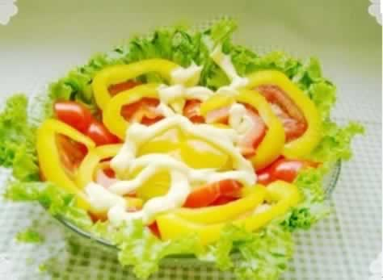

准妈妈的早餐营养之选
准妈妈在孕期一定要吃早餐，而且还要保证早餐的质量。准妈妈的早餐结构中应包含三大产热营养素，即蛋白质、脂肪与碳水化合物，搭配可荤素兼顾、丰富多样，比如一个鸡蛋搭配一杯牛奶麦片，同时再来点新鲜水果，既能增加食欲，还能保证维生素与其他营养的全面摄入。肠胃不太好的准妈妈，可以多吃点热的稀饭、燕麦片、奶、豆花、面汤等，起到温胃养胃的作用，尤其是在寒冷的冬天。准妈妈的早餐最好不要选择油条，因为许多炸油条都是使用的明矾，明矾中的铝会通过胎盘侵入胎宝宝大脑，进而营养胎宝宝的智力发育。
本周推荐尝试食谱1：
芝麻酱千层饼
推荐理由：芝麻是高蛋白作物，营养丰富，具有补血、润肠、补虚劳、润肌肤等功效，本食谱可作为早餐的主食
食谱原料：
食谱原料：
小麦面粉500克，酵母(干) 5克，熟面粉 60克，水 300毫升，白糖 50克，糖桂花，芝麻酱 30克，花生油 50克。
制作方法：
1、将面粉用清水加酵母和成光滑的面团，进行发酵（冬季约1小时，面团发的不宜过老）。
2、将白糖、芝麻酱用油调稀，加熟面粉、糖桂花搅拌均匀。
3、将发好的面团擀开，涂抹上芝麻酱糊，卷起，再擀开。如此反复叠3次。
4、上蒸锅大火蒸熟（约蒸25~30分钟）。
5、蒸熟后稍凉切块即可。
本周推荐尝试食谱2：
炫彩蔬菜沙拉
推荐理由：色美味鲜，酸甜可口，含丰富的维生素和蛋白质，可以作为早餐的小配菜，还能增强食欲。
食谱原料：
红椒 20克，甜椒 20克，西红柿 20克，生菜 4片，沙拉酱少许。
制作方法：
1、红、黄甜椒洗净，去蒂除籽，切成条状和块状。
2、番茄洗净，切成圆形片。
3、生菜叶洗净，沥干水分。
4、取一大碗，铺入生菜，依次摆放好切好的番茄片和红、黄甜椒，淋沙拉酱即可。